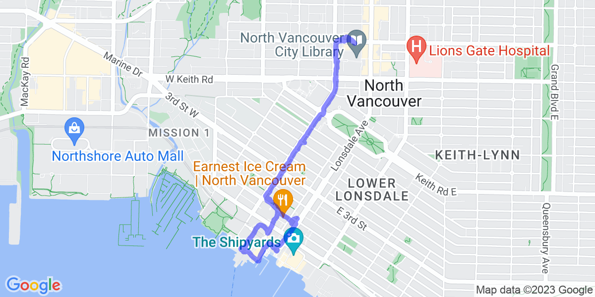
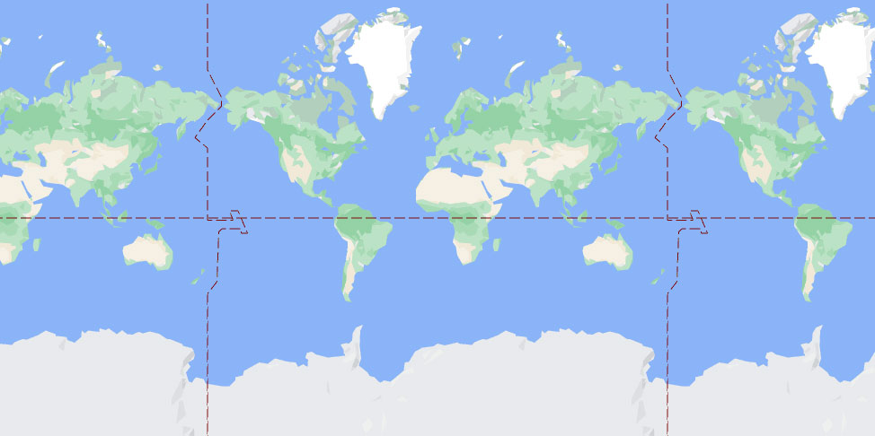

alive
🌞
🏔️
😎
🚶
outside
😎
DAILY OUTDOOR FITNESS ACCOUNTABILITY
"put your money where your health is"
Daily Walk Goal: 3 km (edit)
Daily Run Goal: 5 km (edit)
Daily Ride Goal: 10 km (edit)
Monthly Walk Goal: 150 km (edit)
Monthly Run Goal: 200 km (edit)
Monthly Ride Goal: 500 km (edit)
today
Date
Total Walk
Total Run
Total Ride
This is the walk title
DISTANCE: X.XX km
ELEVATION GAIN: X.XX m
DURATION: X:XX
View on Strava

yesterday
Date
Total Walk
Total Run
Total Ride

NO EXERCISE YET
TIME REMAINING:
+
support